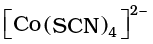

9.3 Nomenclature of Coordination Compounds
Nomenclature is important in Coordination Chemistry because of the need to have an unambiguous method of describing formulas and writing systematic names, particularly when dealing with isomers. The formulas and names adopted for coordination entities are based on the recommendations of the International Union of Pure and Applied Chemistry (IUPAC).
9.3.1 Formulas of Mononuclear Coordination Entities
The formula of a compound is a shorthand tool used to provide basic information about the constitution of the compound in a concise and convenient manner. Mononuclear coordination entities contain a single central metal atom. The following rules are applied while writing the formulas:
(i) The central atom is listed first.
(ii) The ligands are then listed in alphabetical order. The placement of a ligand in the list does not depend on its charge.
(iii) Polydentate ligands are also listed alphabetically. In case of abbreviated ligand, the first letter of the abbreviation is used to determine the position of the ligand in the alphabetical order.
(iv) The formula for the entire coordination entity, whether charged or not, is enclosed in square brackets. When ligands are polyatomic, their formulas are enclosed in parentheses. Ligand abbreviations are also enclosed in parentheses.
(v) There should be no space between the ligands and the metal within a coordination sphere.
(vi) When the formula of a charged coordination entity is to be written without that of the counter ion, the charge is indicated outside the square brackets as a right superscript with the number before the sign. For example, [Co(CN)6]3–, [Cr(H2O)6]3+, etc.
(vii) The charge of the cation(s) is balanced by the charge of the anion(s).
Note: The 2004 IUPAC draft recommends that ligands will be sorted alphabetically, irrespective of charge.
9.3.2 Naming of Mononuclear Coordination Compounds
The names of coordination compounds are derived by following the principles of additive nomenclature. Thus, the groups that surround the central atom must be identified in the name. They are listed as prefixes to the name of the central atom along with any appropriate multipliers. The following rules are used when naming coordination compounds:
(i) The cation is named first in both positively and negatively charged coordination entities.
(ii) The ligands are named in an alphabetical order before the name of the central atom/ion. (This procedure is reversed from writing formula).
(iii) Names of the anionic ligands end in –o, those of neutral and cationic ligands are the same except aqua for H2O, ammine for NH3, carbonyl for CO and nitrosyl for NO. These are placed within enclosing marks ( ).
(iv) Prefixes mono, di, tri, etc., are used to indicate the number of the individual ligands in the coordination entity. When the names of the ligands include a numerical prefix, then the terms, bis, tris, tetrakis are used, the ligand to which they refer being placed in parentheses. For example, [NiCl2(PPh3)2] is named as dichlorobis(triphenylphosphine)nickel(II).
(v) Oxidation state of the metal in cation, anion or neutral coordination entity is indicated by Roman numeral in parenthesis.
(vi) If the complex ion is a cation, the metal is named same as the element. For example, Co in a complex cation is called cobalt and Pt is called platinum. If the complex ion is an anion, the name of the metal ends with the suffix – ate. For example, Co in a complex anion, is called cobaltate. For some metals, the Latin names are
used in the complex anions, e.g., ferrate for Fe.
(vii) The neutral complex molecule is named similar to that of the complex cation.
The following examples illustrate the nomenclature for coordination compounds.
Note: The 2004 IUPAC draft recommends that anionic ligands will end with–ido so that chloro would become chlorido, etc.
1. [Cr(NH3)3(H2O)3]Cl3 is named as:
triamminetriaquachromium(III) chloride
Explanation: The complex ion is inside the square bracket, which is a cation. The amine ligands are named before the aqua ligands according to alphabetical order. Since there are three chloride ions in the compound, the charge on the complex ion must be +3 (since the compound is electrically neutral). From the charge on the complex ion and the charge on the ligands, we can calculate the oxidation number of the metal. In this example, all the ligands are neutral molecules. Therefore, the oxidation number of chromium must be the same as the charge of the complex ion, +3.
2. [Co(H2NCH2CH2NH2)3]2(SO4)3 is named as:
tris(ethane-1,2–diammine)cobalt(III) sulphate
Explanation: The sulphate is the counter anion in this molecule. Since it takes 3 sulphates to bond with two complex cations, the charge on each complex cation must be +3. Further, ethane-1,2–diamine is a neutral molecule, so the oxidation number of cobalt in the complex ion must be +3. Remember that you never have to indicate the number of cations and anions in the name of an ionic compound.
3. [Ag(NH3)2][Ag(CN)2] is named as:
diamminesilver(I) dicyanoargentate(I)
Example 9.2
Write the formulas for the following coordination compounds:
(a) Tetraammineaquachloridocobalt(III) chloride
(b) Potassium tetrahydroxidozincate(II)
(c) Potassium trioxalatoaluminate(III)
(d) Dichloridobis(ethane-1,2-diamine)cobalt(III)
(e) Tetracarbonylnickel(0)
Solution
(a) [Co(NH3)4(H2O)Cl]Cl2 (b) K2[Zn(OH)4] (c) K3[Al(C2O4)3]
(d) [CoCl2(en)2]+ (e) [Ni(CO)4]
Example 9.3
Write the IUPAC names of the following coordination compounds:
(a) [Pt(NH3)2Cl(NO2)] (b) K3[Cr(C2O4)3] (c) [CoCl2(en)2]Cl
(d) [Co(NH3)5(CO3)]Cl (e) Hg[Co(SCN)4]
Solution
(a) Diamminechloridonitrito-N-platinum(II)
(b) Potassium trioxalatochromate(III)
(c) Dichloridobis(ethane-1,2-diamine)cobalt(III) chloride
(d) Pentaamminecarbonatocobalt(III) chloride
(e) Mercury tetrathiocyanatocobaltate(III)
Notice how the name of the metal differs in cation and anion even though they contain the same metal ions
Intext Questions
9.1 Write the formulas for the following coordination compounds:
(i) Tetraamminediaquacobalt(III) chloride
(ii) Potassium tetracyanidonickelate(II)
(iii) Tris(ethane–1,2–diamine) chromium(III) chloride
(iv) Amminebromidochloridonitrito-N-platinate(II)
(v) Dichloridobis(ethane–1,2–diamine)platinum(IV) nitrate
(vi) Iron(III) hexacyanidoferrate(II)
9.2 Write the IUPAC names of the following coordination compounds:
(i) [Co(NH3)6]Cl3 (ii) [Co(NH3)5Cl]Cl2 (iii) K3[Fe(CN)6]
(iv) K3[Fe(C2O4)3] (v) K2[PdCl4] (vi) [Pt(NH3)2Cl(NH2CH3)]Cl